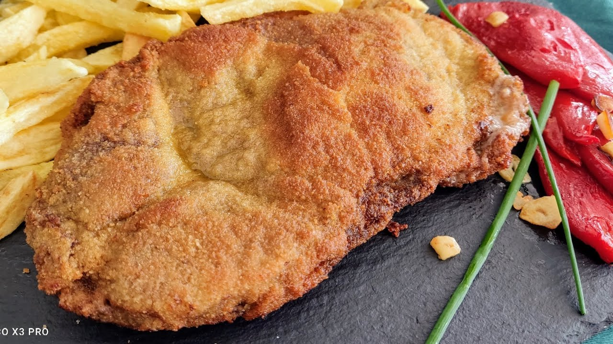
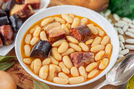
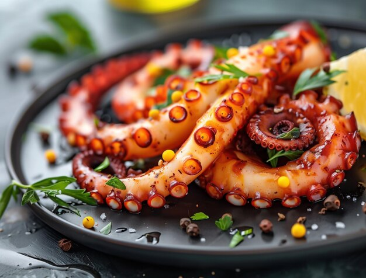
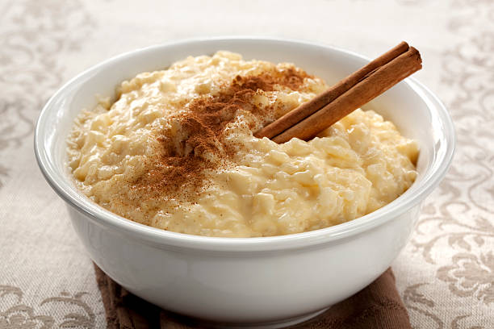
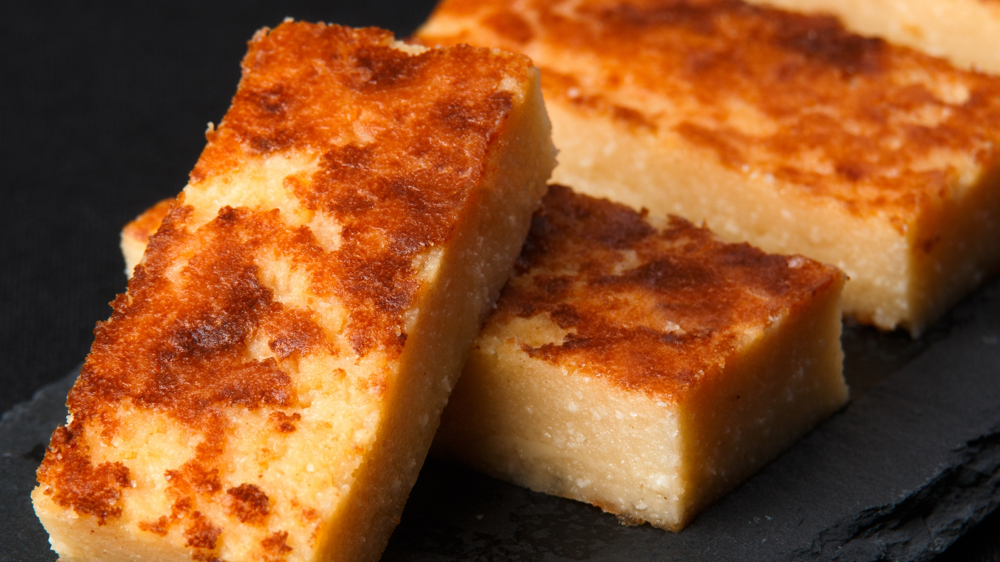

Nuestra Carta

Cachopo
Ternera rellena de jamón y queso, empanada y frita

Fabada
Fabes con chorizo, morcilla y panceta

Pulpo a la gallega
Pulpo con pimentón, aceite y patatas
Marmitako
Guiso de bonito con patatas y pimientos

Arroz con leche
Arroz dulce con leche, canela y limón

Quesada
Dulce cántabro de leche cuajada y limón